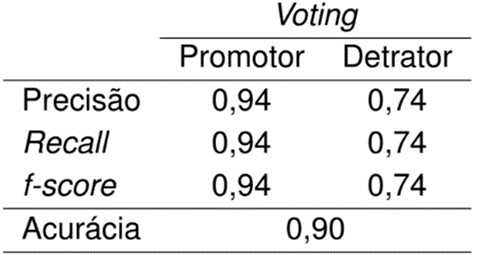
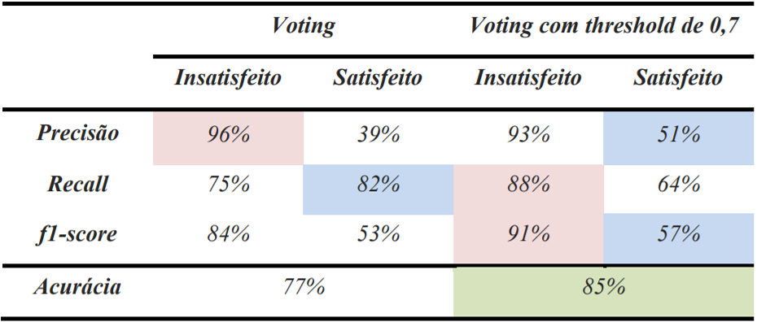

Sobre Mim
Mestrando em Inteligência Computacional, Especialista em Ciência de Dados e Engenheiro de Produção, determinado e com muita facilidade para aprender. Tenho como objetivo aplicar meus conhecimentos e técnicas como Cientista de Dados.
Formação
- Mestrado em Computação Aplicada - Linha de pesquisa em Inteligência Computacional | Programa De Pós-Graduação Em Informática (PPGI) da Universidade Tecnológica Federal do Paraná (UTFPR) - (2025 - Em Andamento)
- MBA em Data Science e Analytics - Universidade de São Paulo (USP) - (2024 - 2025)
- Formação Cientista de Dados 4.0 - Data Science Academy (DSA) - (2023 - 2024)
- Bacharelado em Engenharia de Produção - Universidade Tecnológica Federal do Paraná (UTFPR) - (2019 - 2023)
Experiências
Residente em Inteligência Artificial @ Hub de Inteligência Artificial SENAI - PR - (Jul/2025 - Atual)
- Atuação em projetos reais com empresas parceiras do SENAI;
- Tradução de problemas de negócio em problemas analíticos;
- Construção de modelos de machine learning (regressão, classificação, clustering e séries temporais);
- Aplicação de técnicas estatísticas e de aprendizado de máquina para resolução de problemas industriais;
- Avaliação de desempenho de modelos e validação com métricas apropriadas;
- Documentação técnica e apresentação de resultados para stakeholders técnicos e não técnicos.
Cientista de Dados @ Trucks Control - (Mai/2024 - Atual)
- Modelos de visão computacional para previsão de classes em vídeos;
- Modelos antifraude;
- Modelos preditivos de classificação e reconhecimento de imagens;
- Deploy de modelos via API em contêineres Docker;
- Ciência de Dados como ferramenta para identificar fatores essenciais e prioritários.
Analista de Dados - Litz Estratégia e Marketing (Jun/2023 - Abr/2024 ~ 11 meses)
- Analisar dados de clientes visando otimizar seus resultados;
- Desenvolvimento de dashboards para diversas áreas de atuação, como varejo, franquias, serviços, entre outros;
- Otimazacão da performance de dashboards e automatização de tarefas via Python;
- Modelos de Machine Learning para identificar padrões em questionários de pesquisa e elencar atributos mais importantes para serem priorizados com SHAP.
Estagiário de Suprimentos @ MSE Engenharia - (Abr/2022 - Set/2022 ~ 6 meses)
- Realizar orçamentos e negociar com fornecedores para otimizar custos das obras;
- Manter os preços históricos atualizados no Banco de Dados.
Empresa Júnior
Trainee @ Aprimora (2023 - 2024 ~ 3 meses)
- Atividades relacionadas ao treinamento
Membro @ MECA Jr (Jul/2018 - Dez/2019 ~ 1 ano e 6 meses)
- Atividades relacionadas a área administrativa, processos internos e burocráticos;
- Atividades relacionadas a área de marketing, atrair clientes e divulgar a EJ em eventos.
Projetos
Técnicas de aprendizagem de máquina para classificação do nível de satisfação do estudante com base em seu perfil e percepção sobre uma universidade
TCC
Analisei o desempenho de algoritmos de Machine Learning para classificar o nível de satisfação do estudante com a universidade, identificando os atributos mais importantes para os modelos.
A partir de técnicas de balanceamento no conjunto de dados como Oversampling, Undersampling e a combinação de ambos os métodos, em conjunto com modelos de classificação como Random Forest, Multilayer Perceptron, XGBoost e Support Vector Machine,
classifiquei o estudante entre promotor e detrator. Para avaliar o poder preditivo dos métodos, foram utilizadas métricas de avaliação como acurácia, f-score, precisão e recall.
O melhor modelo foi a combinação de todos os modelos com o método ensemble voting, com uma acurácia geral de 90%, a categoria mais importante foi a de notas, com 44,84% de importância, e as variáveis mais importantes foram a satisfação com o próprio curso, a situação de moradia do estudante e a motivação do estudante para estudar.
Melhores Resultados:

Resultado Voting:

Primeiros Atributos SHAP:

Avaliação da satisfação de usuários de aeroportos usando aprendizagem de máquina aplicada à base de dados da Secretaria de Aviação Civil
Publicado
Este artigo relata a aplicação de técnicas de aprendizado de máquina à base de dados da Secretaria Nacional de Aviação Civil com os dados da pesquisa de satisfação de usuários de aeroportos no Brasil.
Foram aplicados os métodos Random Forest, KNN, Decision Tree e Naive Bayes para classificar a satisfação dos usuários, sendo o grau médio de satisfação dos entrevistados utilizado como variável de saída.
A técnica de undersampling foi usada para melhorar o balanceamento da base e melhorar o desempenho das técnicas.
Os modelos obtiveram bom desempenho na classificação dos usuários, porém pesquisas futuras ainda serão necessárias para ajustar os parâmetros dos modelos e obter melhores resultados.
A pesquisa ainda revelou que os principais fatores que afetam a satisfação são a limpeza, conforto acústico, conforto térmico e disponibilidade de sanitários nos aeroportos.

Classificação da satisfação em relação à economia em dados latino-americanos utilizando aprendizagem de máquina
Publicado
Aplicação dos algoritmos Random Forest, XGBoost e Support Vector Machine para classificar a satisfação dos latino-americanos com relação à economia de seu país.
Os dados utilizados são da pesquisa realizada pela organização Latinobarômetro, e são referentes ao levantamento realizado no ano de 2020.
Ao todo, foram contabilizados 23 países e mais de 20 mil entrevistados, que forneceram dados de pesquisa de opinião em relação economia, democracia, além de informações demográficas.
Os resultados mostraram que a combinação dos três modelos com o método ensemble voting, alcançou métricas promissoras através de uma votação com peso probabilístico.
Para este modelo, atingiu-se acurácia de 85%, com uma precisão de 93% e recall de 88% para a classe de “Insatisfeitos”. Entretanto, os modelos em geral tiveram limitações para a classificação daqueles que são considerados “Satisfeitos” com a economia.
Os atributos mais importantes para os modelos foram “Satisfação com a democracia”, “Confiança no presidente” e “Quão justa é a distribuição de renda” foram as que que tiveram maior contribuição para os modelos.

Técnicas de agrupamento para a análise de acidentes de trânsito na cidade de Belo Horizonte - Minas Gerais no ano de 2021
Publicado
Aplicação de técnicas de clusterização no contexto de acidentes de trânsito na cidade de Belo Horizonte. Os dados foram disponibilizados publicamente pela prefeitura e são provenientes de boletins de ocorrência registrados pela polícia no ano de 2021.
Para a criação do conjunto de dados final, foi necessária a fusão de três conjuntos preliminares, análise de instâncias faltantes e transformação de atributos, resultando em uma base processada com 4.562 instâncias e 31 variáveis para análise.
Para a etapa de agrupamento, foram utilizados os métodos K-Means e Hierárquico para formar os grupos de acidentes com base em suas similaridades.
Identificou-se um total de seis clusters que foram discutidos do ponto de vista de suas particularidades, como tipos de acidentes, ocorrências em feriados ou vésperas, características do tempo, características da via, e vítimas fatais.

Publicações
- OLIVEIRA, LEONARDO FERNANDO DE; VENTURINI, GABRIEL CARLOS; JUNIOR, NELSON ANTUNES; LIMA, RAFAEL HENRIQUE PALMA; SANTOS, BRUNO SAMWAYS DOS. AVALIAÇÃO DA SATISFAÇÃO DE USUÁRIOS DE AEROPORTOS USANDO APRENDIZAGEM DE MÁQUINA APLICADA À BASE DE DADOS DA SECRETARIA DE AVIAÇÃO CIVIL. Anais do Encontro Nacional de Engenharia de Produção. [S. l.]: ENEGEP 2023 - Encontro Nacional de Engenharia de Produção, 27 out. 2023. DOI 10.14488/enegep2023_tn_st_402_1976_45823. Disponível em: http://dx.doi.org/10.14488/ENEGEP2023_TN_ST_402_1976_45823.
- TAUIL, YASSER BULATY; VENTURINI, GABRIEL CARLOS; SANTOS, HENRIQUE SARTORELLO; SANTOS, BRUNO SAMWAYS DOS. CLASSIFICAÇÃO DA SATISFAÇÃO EM RELAÇÃO À ECONOMIA EM DADOS LATINO-AMERICANOS UTILIZANDO APRENDIZAGEM DE MÁQUINA. Anais do Encontro Nacional de Engenharia de Produção. [S. l.]: ENEGEP 2023 - Encontro Nacional de Engenharia de Produção, 27 out. 2023. DOI 10.14488/enegep2023_tn_st_401_1975_46520. Disponível em: http://dx.doi.org/10.14488/ENEGEP2023_TN_ST_401_1975_46520.
- TAUIL, YASSER BULATY; VENTURINI, GABRIEL CARLOS; DIAS, MATHEUS SANTOS; SANTOS, BRUNO SAMWAYS DOS; LIMA, RAFAEL HENRIQUE PALMA. TÉCNICAS DE AGRUPAMENTO PARA A ANÁLISE DE ACIDENTES DE TR NSITO NA CIDADE DE BELO HORIZONTE - MINAS GERAIS NO ANO DE 2021. Anais do Encontro Nacional de Engenharia de Produção. [S. l.]: ENEGEP 2023 - Encontro Nacional de Engenharia de Produção, 27 out. 2023. DOI 10.14488/enegep2023_tn_st_401_1975_46517. Disponível em: http://dx.doi.org/10.14488/ENEGEP2023_TN_ST_401_1975_46517.